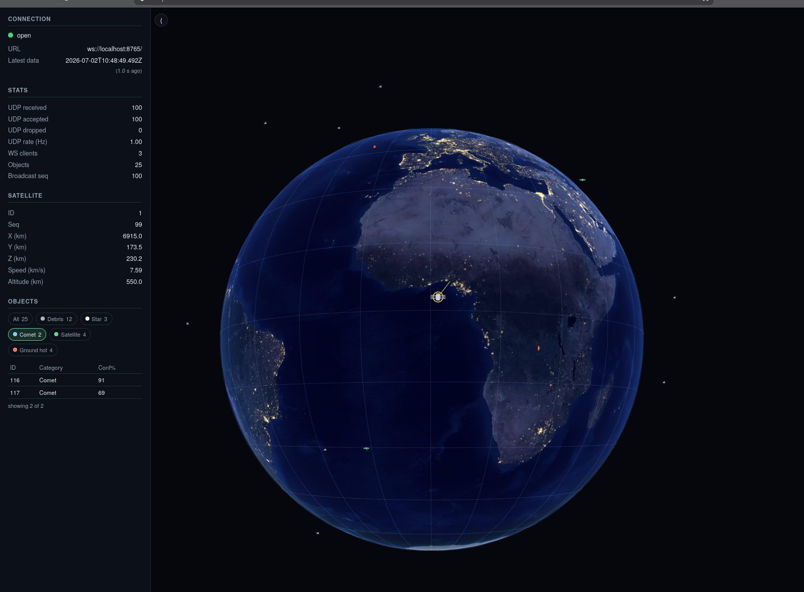

Orbital LOS Viewer
A self-contained, localhost/LAN visualization stack for one primary satellite in Earth orbit plus up to 5,000 tracked objects — debris, stars, comets, other satellites, and hot ground objects — rendered in a browser at 1 Hz with no runtime internet access and (almost) no third-party code.

What is it?
Orbital LOS Viewer is a three-component pipeline. A C++ simulator
(olv_sim) replays CSV missions or synthesizes load-test data and sends it
as binary UDP packets. A C++ backend (olv_backend,
Boost.Asio/Beast) validates, aggregates, and rebroadcasts the world state as
WebSocket JSON at 1 Hz. A dependency-free WebGL frontend renders
the globe, the objects, an optional astronomically-correct sky, and a satellite
point-of-view fisheye mode — plain HTML/CSS/JS, no frameworks, no build step.
The backend can ingest either the first-party OLV1 binary UDP protocol (default) or IEEE 1278.1 DIS Entity State PDUs, selected at boot.
Start here
🎯 Decision makers
What the project is, what problem it solves, its architecture and technology choices, licensing, and security posture.
Project Overview →👥 Users
Install the prerequisites, build or containerize the stack, run your first mission, and configure every option.
Installation Guide →🛠 Developers
Architecture in depth, source walkthrough, build system, testing, and how to extend protocols, panels, and input sources.
Developer Guide →📚 Reference
Normative wire formats (OLV1, DIS, WebSocket JSON), every configuration key and CLI flag, file formats, ports, and glossary.
Reference →60-second quick start
With Podman or Docker installed, one command brings up the whole stack (backend + looping example mission + nginx-served frontend):
git clone <repo-url> live-track-display-tool
cd live-track-display-tool
scripts/run_all.sh # builds images on first run, waits for readiness
# then open http://localhost:8000/
Prefer native binaries? See Building from source and Getting Started.
Highlights
- Zero-trust input: every UDP packet passes an 11-step ordered validation pipeline (structure, CRC-32, NaN/Inf, range, sequence staleness) before it can touch shared state — a failure drops the whole packet, never part of it.
- Two view modes: a free orbit camera, and a 170° equidistant-fisheye nadir view rendered from the primary satellite (V to toggle).
- Time-accurate sky: ~230 bright stars, the Moon (with illuminated fraction), and the five naked-eye planets, positioned from the state message's timestamp.
- Deterministic and testable: seeded synthetic generation, a first-party C++ test framework, Node-based frontend logic tests, and an end-to-end integration test that proves backend JSON is frontend-compatible.
- Air-gap friendly: no runtime internet access, vendored
public-domain NASA imagery, one pinned compiled dependency
(
open-dis-cpp) with sha256-verified offline install.
Documentation map
| Section | Contents |
|---|---|
| Overview | Executive summary, purpose, capabilities, architecture at a glance, technology stack, FAQ. |
| User Guide | Installation, configuration, getting started, usage of every feature, tutorials, troubleshooting, best practices. |
| Developer Guide | Repository structure, detailed architecture, build system, source walkthrough, APIs, extension points, testing, debugging, coding standards, release process. |
| Reference | Configuration keys, environment variables, CLI flags, the three wire protocols, file formats, ports, glossary. |
docs/PROTOCOL_UDP.md, docs/PROTOCOL_DIS.md, and
docs/PROTOCOL_WS.md. If this site and those files ever disagree, the
Markdown specs win.